제 1 장 서론
1.1 딥테크(Deep Tech)
2000년대 이후 글로벌 성장은 빅테크 기업들이 주도해왔다고 해도 과언이 아니다. 인터넷의 등장과 소프트웨어 공학의 폭발적인 발전을 기반 삼아 아날로그에서 디지털로 변화하며 빠르게 혁신해 온 사회는 점차 새로운 성장 모멘텀을찾고 있다. '딥테크'란 이와 같은 갈증을 배경으로 등장한 개념이다.
딥테크는 투자회사인 프로펠(엑스)의 창업자 스와티 차뚜르베디가 처음 고안한 용어로서, 소프트웨어 중심의 하이테크와는 다른, "생명 과학", "에너지", "청정기술", "컴퓨터 과학", "재료 및 화학 분야" 등 첨단 기술 분야의 신생 기업들을분류하기 위해 만들어졌다(한국지능정보사회진흥원, 2023). 이들은 물리적 실체가 있는 대상을 기반으로 한 혁신으로서, 플랫폼 기업, 공유 경제 등의 소프트웨어 기반 기업과 구분되며, 본질적으로 기초 과학 또는 공학 기반 기술을 활용하여 문제를 해결하고자 한다.
한국지능정보사회진흥원 보고서(2023)에 따르면 딥테크의 특징은 네 가지로정의할 수 있다. 첫째, 기초 과학 기반의 연구 개발을 통해 만들어진다. 둘째, 기술적 난이도가 높고 불확실성이 높아 개발 기간이 오래 걸리고 비용이 많이든다. 대신 연구 개발이 성공했을 때는 독보적인 기술 우위로 시장을 선도할 수있다. 셋째, 미션 중심적인 경우가 많아 문제에 대한 근원적 해결책을 추구한다.
따라서 신속한 해답을 찾기보다는 문제 해결을 위한 역량을 체화시키는 데에더 집중한다. 넷째, 디지털 영역을 넘어 실체가 있는 대상을 연구 개발 영역으로 한다. 이러한 특징들로 인해 딥테크는 기존 기술과 차별화된 방식으로 현실적인 문제를 해결할 잠재력을 지니고 있다.
1.2 연구 목적
앞서 논한 것과 같이 기술적 난이도가 높을 수록 불확실성이 높아 딥테크 벤처 기업의 실패 가능성이 특히 높고, 문제 해결을 위한 기술력 확보에 성공했다
하더라도 이를 상용화하기 위한 관문이 남아 있다. 하이테크 시장에서 기술 혁신을 상용화할 때 기업이 직면하는 어려움은 이러한 시장을 특징짓는 신기술의변동성, 상호 연결성, 확산으로 인해 더욱 악화되며, 이는 주로 상용화 부진으로인해 시장에서 실패하는 신기술 제품이 많다는 점에서 분명히 알 수 있다
(Chiesa, 2011).
대한민국은 제한된 자연 자원을 가지고 있음에도 불구하고 글로벌 경제 강국으로 자리잡았다. 이러한 성취는 인적 자원에 대한 높은 의존도를 기반으로 이루어졌으며, R&D와 혁신 중심 성장, 특히 제조업 기반 산업을 주요 동력으로삼아 왔다. 유형적인 기술 혁신을 추구하는 딥테크는 견고한 제조업 기반과 경제력을 갖춘 대한민국이 기존의 경쟁력을 더욱 강화하고, 기술 강국으로서 지속가능한 미래를 준비할 수 있는 산업이다. 특히, 반도체, 바이오, 첨단 소재 등의고부가가치 기술 분야에서 혁신을 주도하는 딥테크 기업은 국가 경제의 지속가능한 성장 동력으로 기능할 잠재력이 있다. 모범적인 딥테크 기업의 사례 분석은 이와 같은 관점에서 중요한 통찰을 제공할 수 있다. 따라서 본 사례 연구에서는 성공적인 딥테크 벤처 기업인 파크시스템스를 분석하고자 한다. 이 기업은 원자현미경 분야의 선도적 기업으로, 한국을 넘어 글로벌 시장에서 점유율 1 위를 달성하며 경쟁력을 확보해 왔다. 이를 통해 딥테크 벤처 기업의 성장 전략과 발전 방향에 대한 시사점을 도출할 것이다.
제 2 장 이론적 배경
2.1 Competitive Strategy
마이클 포터 교수는 그의 저서 '경쟁 전략(Competitive Strategy, 1980)'에서 산업내의 경쟁사들을 이기기 위한 세 가지의 본원적(Generic) 전략을 제시했다. 이전략들은 특정 산업 내에서 기업이 장기적으로 방어 가능한 위치를 구축하고우수한 수익을 창출할 수 있도록 도와주는 전략으로, 차별화(Differentiation), 전반적인 비용 우위(Overall Cost Leadership), 집중화(Focus)가 그것이다. 그 중에서차별화 전략은 자사의 제품이나 서비스의 독특한 특성을 통해 부가가치를 높여경쟁 우위를 확보하는 전략이다. 이를 위해 제품 엔지니어링이나 연구개발, 강력한 마케팅 능력, 창의적인 인재 유치, 질적 관리 시스템 등이 요구될 수 있으며, 경쟁자들이 쉽게 보유할 수 없는 경쟁력을 활용한 제품 차별화를 통해 고객으로 하여금 자사 제품에서 경쟁사들의 것과 구별되는 가치를 인식하게 할 수있다고 제시하고 있다. 또한 포터는 세 가지 전략 중 하나를 명확하게 선택하지않으면 중간에 끼어버릴('stuck in the middle') 수 있다고 경고했는데, 이는 특정한경쟁 우위를 확보하지 못하고 시장에서 경쟁력을 잃게 되는 상황을 의미했다.
예를 들어 전반적인 비용 우위 전략과 차별화 전략은 실행하는 데 필요한 자원과 역량이 상이하므로, 둘을 모두 추구하려 할 경우 실행에 필요한 자원을 충분히 갖추지 못할 수 있다는 것이다. 따라서 기업이 자신의 자원과 역량을 면밀히분석하여, 상황에 맞는 전략을 명확히 선택하고 실행하는 것이 경쟁 우위를 확보하는 핵심이라고 할 수 있다.
그림 1 Generic Strategies
(출처: Michael Porter, 1980)
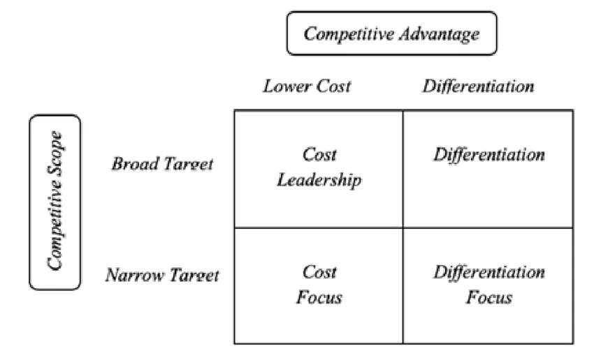
2.2 Beachhead Market Strategy
제프리 무어(Jeffrey S. Moore) 교수는 그의 저서인 'Crossing the Chasm' 에서 시장접근 전략을 노르망디 상륙작전의 예시에 비유했다. 이 비유는 작은 근거지, 즉안정적인 거점을 한 번의 집중된 공격으로 우선 점령한 뒤 나머지 지역으로 진격하는 군사 전략을 빗댄 것이다. 경영적 관점에서 보면 기업이 새로운 시장에
진입할 때 특정 세그먼트를 우선 공략하여 안정적인 입지를 확보하고, 이를 바탕으로 점진적인 시장 점유율 확대를 노리는 접근법이다.
그림 2 A graphical depiction of how beachhead works (출처: Gunjan Solanki, 2022)
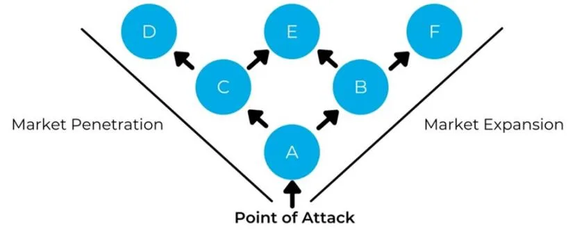
거점 시장(Beachhead Market)이라는 개념은 MIT 슬론 경영대학원 교수 빌 올렛 (Bill Aulet)에 의해 좀더 실용적인 프레임워크로 발전되었다. 그의 저서인 '스타트업 바이블(원제 Disciplined Entreneurship: 24 Steps to a Successful Startup)'에서 올렛은 스타트업 창업을 위한 24단계 프로세스를 제시한다. 그 중에서 두 번째 단계는 '거점 시장 선택(Select a Beachhead Market)'인데, 타겟 고객을 명확하게 정의하는 과정에 속한다. 그는 단기간에 지배력을 확보할 수 있는 하나의 시장에서출발할 것을 권장하며, 해당 시장을 찾기 위해 다음 세 가지 조건을 충족시킬때까지 시장을 세분화하라고 조언한다. 첫째, 시장 내의 고객은 모두 유사한 제품을 구매해야 한다. 둘째, 고객에 대한 영업주기가 유사하고 제품에 대한 기대가치도 비슷해야 한다. 즉 여러 고객들에게 유사한 영업전략을 적용할 수 있어야 한다. 셋째, 고객들이 동일 그룹 혹은 지역에 속하여 그들 사이에 입소문이라는 강력한 구매 기준이 존재해야 한다. 이러한 조건들을 충족할 때까지 세분화하고, 이후 공략 가능한 시장을 명확히 선정해 집중적으로 공략해야 한다는것이다. 작은 시장을 목표로 삼고 자원을 집중 투입하여 해당 시장을 점령한 다
음, 이를 기반으로 다른 세그먼트로 확장해 나가는 이 전략은 특히 자원이 제한된 중소규모 기업에게 유용하다.
제 3 장 원자현미경 시장과 파크시스템스
3.1 Atomic Force Microscopy
원자현미경(AFM, Atomic Force Microscope)은 광학현미경과 전자현미경을 잇는제 3세대 현미경이라고 불리는 차세대 현미경 기술이다. 광학현미경과 전자현미경의 최고 배율이 각각 수천 배(100nm), 수십만 배(1nm)인 데 비해 원자현미경은 최고 수천만 배(0.01nm)까지 시료를 관찰할 수 있어 정밀한 분석이 필요한분야에서 특히 각광받고 있다.
그림 3. 원자현미경의 주요 구성 요소.
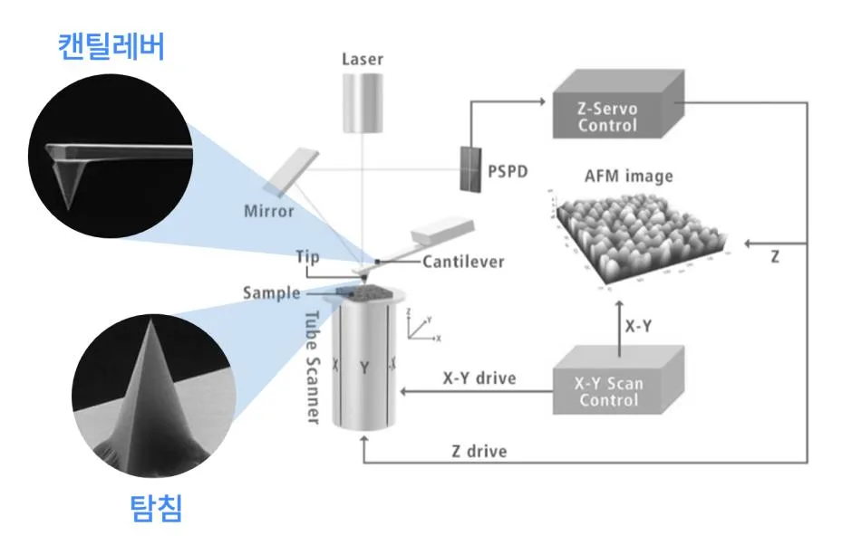
(원본 이미지 출처: 파크시스템스 사업보고서, 본인 수정)
AFM에서는 마이크로머시닝(micro-machining)으로 제조된 캔틸레버(Cantilever) 라고 하는 작은 막대 구조물을 사용한다. 캔틸레버는 길이 100um, 폭 10um, 두께 1um 정도로 아주 작아서 미세한 힘에 의해서도 위아래로 쉽게 휘도록 만들어졌다. 또한 캔틸레버 끝 부분에는 뾰족한 바늘인 탐침(Tip)이 달려 있으며, 이바늘의 끝은 원자 몇 개 정도의 크기로 매우 첨예하다(양경득, 2009). 탐침을 관찰하고자 하는 시료와 매우 가깝게 접근시키면 원자간 상호작용하는 반데르발스 힘에 의해 탐침이 휘어지거나 일정한 공진 주파수에 맞춰 위아래로 진동하
게 된다. 이때 시료와 탐침의 상대적인 위치를 제어하면서 시료 표면을 스캔하는데, 관측 방식에 따라 동시에 탐침 위로 레이저를 조사하고 반사된 빔을 분석하거나 탐침의 공명진동수 변화를 관측하는 방식으로 탐침 끝의 움직임을 미세하게 인식하여 시료의 3D 표면을 형상화할 수 있다. 이를 통해 시료 표면의 3 차원 구조 뿐만 아니라 강조, 점성 등과 같은 물리적 성질도 확인할 수 있다.
3.2 글로벌 원자현미경 시장
그림 4 글로벌 원자현미경 시장 규모 추이
(출처: SNS INSIDER)
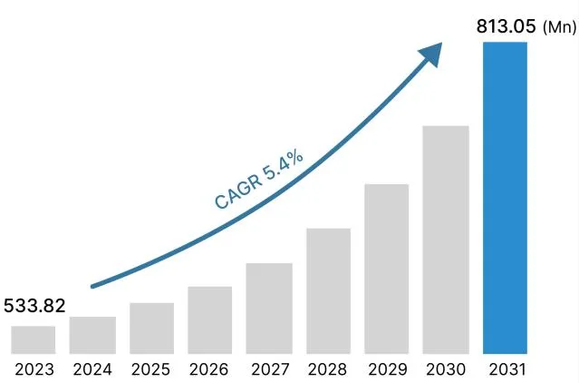
원자현미경은 1980년대 후반부터 본격적으로 상용화되기 시작하였으며, 2023년기준 약 5억 달러 규모로 추산되고 있다. 초기에는 바이오, 소재화학 등의 분야에서 연구용 장비로 주로 개발되었으나 반도체 등의 공정에서 활용도가 늘어나며 산업용 장비의 비중이 크게 증가하는 추세이다. 2031년까지 연평균성장률 5.4%로 꾸준한 성장세를 보일 것으로 예상된다(그림 4).
그림 5 2023 글로벌 원자현미경 시장 점유율
(출처: 파크시스템스 사업보고서)
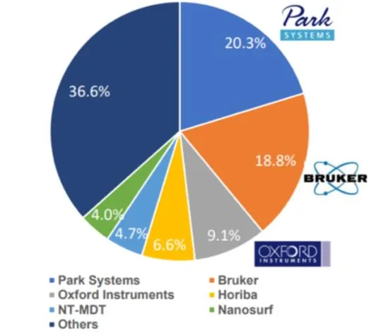
2023년 기준 글로벌 원자현미경의 시장 점유율(그림 5) 자료를 보면 파크시스템스가 20.3%로 1위를 차지하고 있으며, 브루커(Bruker, 18.8%), 옥스포드 인스트루먼트(Oxford Instruments, 9.1%) 등의 기업이 뒤를 잇고 있다. 특히 브루커 사는 2010년대 중반까지만 해도 전체 시장의 40%가 넘는 점유율을 나타낼 정도로강한 시장지배력을 보유하였으나, 당시 2위였던 파크시스템스가 격차를 지속적으로 좁혀 2023년 역전당하는 모습을 보였다(그림 6). 본 사례연구에서는 국내벤처기업인 파크시스템스가 글로벌 시장 1위라는 경이로운 성과를 내기까지의경과와 혁신 요인에 대해 분석한다.
그림 6 Bruker, ParkSystems의 글로벌 시장 점유율 추이
(출처: QY Research 자료 재구성)
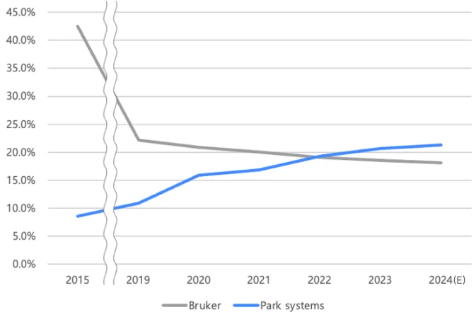
3.3 파크시스템스
파크시스템스(Park Systems Corp.)는 원자현미경을 개발, 생산 및 판매하는 나노계측기기 전문 기업이다. 박상일 대표는 앞서 1988년 원자현미경 기업인 PSI 사를 창업하여 1997년 Thermo Spectra 사에 성공적으로 매각하였다. 매각 직후 한국으로 돌아온 박상일 대표는 1997년 4월 7일 파크시스템스(당시 PSIA)를 설립하였고, 기존 원자현미경의 단점을 개선한 차세대 원자현미경 개발에 매진하였다. 파크시스템스는 현재 연구용 현미경 뿐만 아니라 산업용 현미경 시장에서도활발하게 활동하고 있으며, 2015년 12월 17일 코스닥에 상장하여 2024년 현재시가총액 1조가 넘는 기업으로 자리잡았다.
그림 7. 파크시스템스 연간 매출 및 순이익 추이
(출처: 파크시스템스 사업보고서 참고하여 본인 작성)
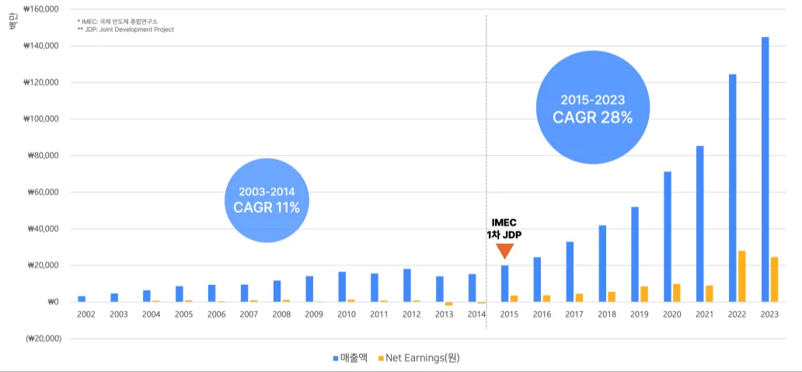
파크시스템스의 놀라운 성장은 연도별 실적 지표(그림 7)를 보면 더욱 여실히드러난다. 2002년과 2023년의 매출액은 무려 36.4배 차이를 보이며, 2019년부터 2023년까지의 기간 동안 연평균성장률은 28%를 상회한다. 2002년부터 2023년까지 전 기간에 걸쳐 매출액의 연평균 성장률은 17%에 달하는데, 특히 2015년을기점으로 그 상승세가 눈에 띄게 가팔라지는 것을 확인할 수 있다. 해당 연도는파크시스템스가 IMEC(국제 반도체 종합 연구기관)과 공동 연구를 진행했던 시점이며, 이 협업은 파크시스템스가 반도체 시장에 본격적으로 진입하는 계기가
되었다. 그림 7의 그래프를 2015년을 기점으로 나눴을 때 이전 기간의 연평균성장률이 11%, 이후 기간의 연평균 성장률이 28%로 큰 차이를 보인다는 점으로 미루어 보아, 반도체 시장 진출이 파크시스템스의 성장 측면에서 기폭제 역할을 했음을 알 수 있다.
3.4 연구 모형
본 연구는 파크시스템스가 글로벌 원자현미경 시장에서 1위를 달성할 수 있었던 원동력을 탐구한다. 그림 8과 같은 흐름으로 분석을 진행하였으며, 파크시스템스의 혁신 요인을 중심으로 크게 기업 분석과 성장 과정 분석의 두 축으로구성된다. 기업 분석에서는 파크시스템스의 핵심 기술 및 특허를 중점적으로 다
룬다. 해당 기업이 독자적인 기술력을 활용하여 경쟁사 대비 자사 제품을 차별화한 과정을 분석했고, 변곡점인 2015년 이전에도 파크시스템스가 연평균 10%
이상 성장하며 원자현미경 시장에서 주요 플레이어로 자리잡을 수 있었던 배경을 탐구했다. 성장 과정 분석에서는 2015년 이후 반도체 시장 진입 시기를 중점적으로 다루며, 파크시스템스가 해당 시장을 선점하면서 산업용 원자현미경 시장의 독보적인 기업으로 거듭날 수 있었던 요인을 중심으로 분석했다.
이를 통해 딥테크 벤처기업의 혁신 요인에 관한 시사점을 도출하고, 특히 자원이 한정된 중소 규모의 기업이 시장 진입 및 확장을 위해 선택할 수 있는 전략에 대해 분석했다.
그림 8 연구 모형
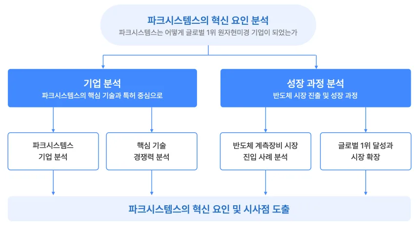
제 4 장 사례 분석
4.1 혁신의 출발점: 기술적 역량
4.1.1 R&D 투자를 통한 기술 경쟁력 확보
파크시스템스 박상일 대표는 스탠포드 대학에서 박사과정을 밟으며 지도교수및 동료들과 함께 원자현미경 기술을 상용화할 수 있도록 개발한 핵심 인물들중 한 명이다. 1980년대 말 일부 기업들이 설립되며 상용 원자현미경 시장이 형성되었고, 1990년대 다양한 연구 기관에서 수요가 증가함에 따라 본격적인 성장을 시작했다. 2000년대 초 시장 상황은 Veeco 사가 Topometrix, Digital Instruments 등과 같은 1세대 원자현미경 기업들을 인수하며 높은 점유율을 형성하고 있었다. 그러나 시장에서 활동하는 전체 기업 수가 많지 않아 경쟁이 비교적 덜하고, 원천 기술의 허들이 높아 신규 경쟁자의 진입 가능성이 낮은 시장이었다.
이러한 상황에서 파크시스템스는 박상일 대표가 박사과정과 PSI 사 창업을 거치며 쌓아온 기술력을 바탕으로 연구개발에 집중하여 독자적 기술 개발을 통한경쟁 우위를 확보하고자 하였다. 특히 박상일 대표는 연구자 출신 창업자로서업계 최고의 기술력을 갖추는 것이 곧 기업의 핵심 경쟁력이라는 철학을 바탕으로 정공법을 강조해왔으며, 이러한 철학은 기업 운영 전반에 녹아있다. 파크시스템스는 단기적 성과에 얽매이기보다 기술을 중심에 둔 장기적 비전을 견지하며, 이를 실현하기 위해 기술력 강화를 통해 차별화된 입지를 구축하고자 했다. 이러한 행보는 적극적인 연구개발 투자 지표에서 확인할 수 있다.
그림 9 파크시스템스 연도별 연구개발비와 매출액 대비 연구비 비율
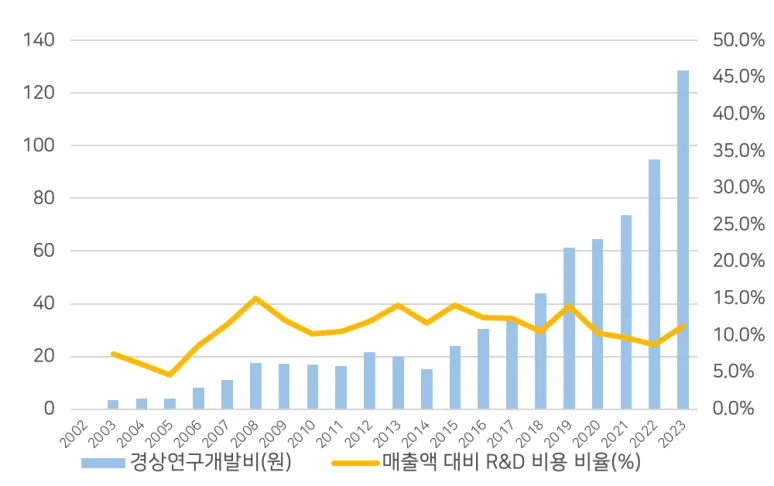
(좌측 축 단위: 억 원 / 출처: 파크시스템스 사업보고서 참고하여 본인 작성)
파크시스템스의 연구개발비 지출은 매출액과 함께 지속적으로 증가하며 일정비율을 유지하고 있다(그림 9). 매출액 대비 연구개발비 비율 평균은 10.8%로, 국내 중소기업 평균인 3.95%에 비해 월등히 높다. 연구 중심적 성향은 기업의인력 구성에서도 나타나는데, 2023년 9월 기준 파크시스템스의 전체 인력 중 R&D 인력 비중은 34%이다. 주요 경쟁사인 브루커의 R&D 인력 비중은 그보다
낮은 18% 정도인 것으로 사업보고서에 나타나고 있다. 대표적인 연구집약적 산업인 제약·바이오 분야 국내 상장기업의 R&D 인력 비중 평균이 15.4%인 것을감안하면 파크시스템스의 수치가 절대적으로도 높은 편에 속함을 알 수 있다.
R&D 집약적 인력 구성과 지속적인 투자의 결과는 독보적인 기술 경쟁력으로나타났다. 이는 특허와 같은 연구 성과물에서 확인할 수 있다. 파크시스템스는 2000년대 초반부터 지속적으로 AFM 기술 관련 특허 활동을 이어오고 있으며, 출원 수의 꾸준한 증가세도 확인할 수 있다(그림 10). 주요 키워드는 탐침, 스캐너, 표면 이미지 등의 AFM 관련 용어들이다. 2024년 4월 기준 국내 출원된 파크시스템스의 특허는 30건이며, 그 중 90%인 27건이 등록 완료된 상태이다. 이는 국내 다수의 대기업들이 50~60% 정도의 특허 등록률(출원 특허 수 대비 등록 특허 수의 비율)을 갖고 있는 것을 감안하면 굉장히 높은 수치다.
그림 10 연도별 파크시스템스 출원 특허 수 (출처: 위즈도메인)
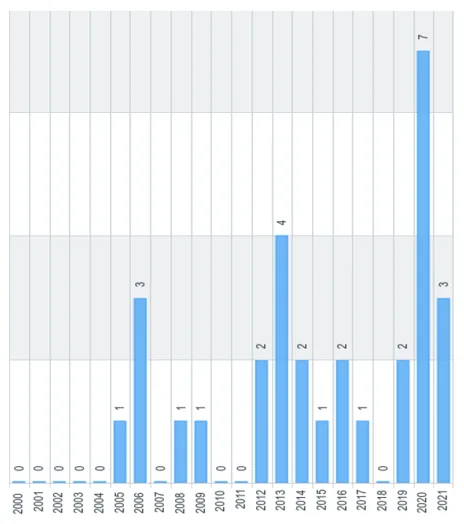
파크시스템스의 높은 특허 등록률은 단순히 출원 건수를 늘리는 것이 아닌, 출원된 특허들이 실제로 등록되어 기술적 가치를 인정받는 데 집중하고 있음을보여준다. 이는 자체 기술 연구소를 통해 직접적인 연구개발에 투자하며 기술적독창성을 확보하려는 파크시스템스의 전략과도 일맥상통했다. 한편 업계의 기존 1위 업체인 경쟁사 브루커 사는 대규모 인프라와 자원을 바탕으로 기술 포트폴리오를 확장해 왔는데, 이와 같은 접근 방식의 차이를 확인하기 위해 두 기업의특허 전략을 비교했다.
브루커 사와 파크시스템스의 특허 현황을 비교하기에 앞서 브루커 사의 사업구조를 살펴볼 필요가 있다. 브루커 사의 직원 수는 2023년 기준 9,700명이 넘는 대기업으로 파크시스템스와 기업 규모 면에서부터 큰 차이를 보이며, 원자현미경 제품만 취급하는 파크시스템스와 달리 4개의 사업부 중 1개 사업부의 일부로서 원자현미경을 판매하고 있다. 따라서 특허 수의 단순 비교는 어려울 것으로 판단하여 유의미하다고 생각되는 특허 위주로 범위를 좁혀서 관찰하였다.
브루커의 4개 사업부 중 원자현미경 제품군을 포함하는 ‘Bruker nano’로 출원된특허 중에서 ‘microscope’ 키워드를 포함한 특허 140여개로 범위를 좁혔다. 이들중 피인용특허수 기준 상위 10%에 속하는 특허들을 보면 과반 이상이 소유권이전이 있으며(표 1), 상당수가 2010년 브루커가 인수한 기업인 Veeco 사로부터
이전된 것이다. 정리하면 브루커 사는 피인용 수가 높은 특허, 즉 주요 기술을보유하기 위한 전략으로서 타 기업의 인수합병이라는 경로를 선택했고, 파크시스템스는 자체 기술연구소를 중심으로 직접 연구개발에 투자하여 기술 획득 방식에 차이가 있었음을 알 수 있다.
표 1 브루커 사의 원자현미경 키워드 특허(피인용수 상위 10%)들의 소유권 이전 여부 (출처:
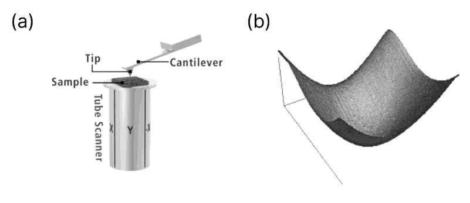
위즈도메인 검색)
피인용 소유권
특허 등록번호 특허 내용횟수 이전
US7908909 계측 기기의 프로브 디바이스를 이송 및 로딩하는 장치 및 방법 45 O
US8904560 고속 주사 탐침 현미경을 위한 폐쇄 루프 제어기 및 방법 35 O
US8646109 주사 탐침 현미경을 작동시키는 방법 및 장치 33 X 피크 힘 태핑 모드를 사용하여 샘플의 물리적 특성을 측정하는
US8650660 31 X 방법 및 장치
US8739309 주사 탐침 현미경을 작동시키는 방법 및 장치 24 O
US10845382 진동 모드를 사용한 샘플의 적외선 특성화 24 X
US8166567 고속 스캐닝 SPM 스캐너 및 그 작동 방법 21 O 광열 효과를 이용한 근접장 광학 현미경의 적외선 주사 방법 및
US10473693 16 O 장치
US8955161 피크포스 광열 기반 IR 나노 흡수 검출 16 O 해상도 및 감도가 향상된 원자간력 현미경 기반 적외선 분광 방
US10228388 14 O 법 및 장치배경 억제 기능을 갖는 적외선 산란 주사 근접장 광학 현미경을
US10228389 13 O 위한 방법 및 장치
US9081028 개선된 피처 위치 결정 능력을 갖는 스캐닝 프로브 현미경 12 X
US8050802 위치 이동 보상 방법 및 장치 11 X 광대역 소스를 이용한 화학적 및 광학적 이미징을 위한 방법 및
US10241131 10 O 장치
4.1.2 핵심 기술 분석
파크시스템스의 핵심 기술 중 하나는 ‘교차 간섭 제거(cross-talk eliminating)’ 기술로, 특허 'KR100646441B1'(특허명:주사 탐침 현미경 | IMPROVED SCANNING PROBE MICROSCOPE)에서 확인할 수 있다. 해당 기술의 핵심은 x-y 스캐너와 z 스캐너를 물리적으로 분리하여 독립적으로 움직이도록 설계한 점으로, 이를 통해 교차 간섭(cross-talk)을 제거할 수 있다. 교차 간섭이란 다축 시스템에서 한축의 움직임이 다른 축의 움직임에 영향을 미치는 것을 의미하며, 기존 원자현미경 제품들은 교차 간섭의 영향으로부터 자유로울 수 없는 구조였다. 그 이유는 스캐너 구조에 있다. 대부분의 기존 시스템에서 피에조 튜브(piezoelectric tube)가 스캐너로 사용되었으며, 피에조 튜브는 직교하는 3차원 액추에이터 방식이 아닌, 속이 빈 튜브가 휘어지는 방식으로 작동한다(그림 11-a). 따라서 xy 평면 상에서 한쪽 끝을 움직이려면 튜브가 해당 방향으로 휘어져야 하며, 이로인해 기울기(tilt)와 높이 변화가 자연스럽게 발생한다. 즉, xy 평면과 z축 움직임사이에 교차 간섭이 발생한다(Kwon, 2003). 그렇기 때문에 기존 방식으로 관측할 경우 그림 11-b. 와 같이 스캐너의 구조 자체에 기인하는 왜곡된 이미지 데이터를 얻게 되어 배경 곡률 보정을 위한 별도의 과정을 거쳐야 한다. 그러나상기 특허에서 제시하는 시스템은 z 스캐너를 x-y 스캐너와 분리하여(그림 12-a)
상호 의존도를 낮추며 각각 별도로 구동을 제어한다. 이로 인해 xy 방향과 z 방향 간의 교차 간섭을 사실상 제거하며 배경 곡률 왜곡을 없앨 수 있다(그림 12- b).
이러한 설계는 이미징 속도 측면에서도 강점을 갖는데, xy 스캐너와 z 스캐너가 물리적으로 독립적이기 때문에, z축의 서보 응답 속도는 xy 스캐너의 특성에의해 제한되지 않는다. 이 점을 이용하여 파크시스템스는 z 축 스테이지를 구동하는 액추에이터의 성능을 크게 높이며 고속 스캐닝을 구현, 이미지 처리 속도를 약 4~5배 증가시켰다(Kwon, 2003).
그림 11 (a) 튜브 스캐너 구조(출처: 파크시스템스) / (b)튜브 스캐너 구조의 일반적인 스캔 이
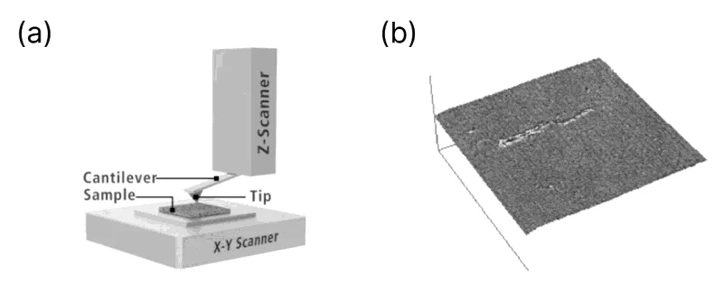
미지 배경 곡률 (출처: Kwon, 2003)
그림 12 (a)분리형 스캐너 구조(출처: 파크시스템스) / (b)분리형 스캐너의 일반적인 스캔 이미
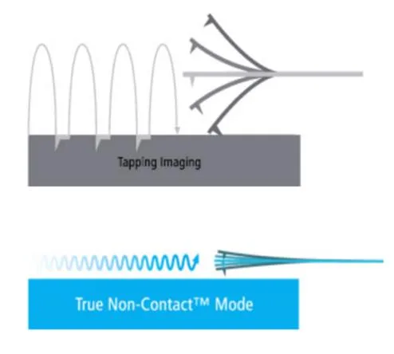
지 (출처: Kwon, 2003)
파크시스템스는 상기한 교차 간섭 제거 기술뿐만 아니라 다양한 원자현미경관련 기술을 독자적으로 개발하였고, 그 혁신성을 인정받아 2015년에는 자체 개발한 기술이 국가핵심기술로 선정되기도 하였다. 국가핵심기술이란, 국내외 시장에서 차지하는 기술적·경제적 가치가 높거나 관련 산업의 성장잠재력이 높아해외로 유출될 경우에 국가의 안전보장 및 국민경제의 발전에 중대한 악영향을줄 우려가 있는 산업기술로서 '산업기술의 유출방지 및 보호에 관한 법률' 9조 (국가핵심기술의 지정ㆍ변경 및 해제 등)에 따라 지정된 산업기술을 말한다. (산업기술의 유출방지 및 보호에 관한 법률 제2조) 이는 파크시스템스의 기술력이국가적 차원에서 보호할 가치가 있는 핵심 기술로 평가받았음을 의미하며 국내외 시장에서 파크시스템스의 기술적 경쟁 우위를 공고히 한다.
4.1.3 제품 차별화
교차 간섭 제거 기술은 파크시스템스의 제품을 차별화하는 기능으로 이어졌다.
원자현미경의 작동 방식은 탐침과 시료가 접촉하는 방식과 시간에 따라 구분되는데, 크게 Contact Mode, Tapping Mode, Non-contact Mode로 나뉜다. Contact Mode 는 탐침이 시료와 항상 접촉하면서 표면 정보를 획득하는 반면, Tapping Mode는탐침이 일정한 진폭으로 진동하며 간헐적으로 시료와 접촉한다. Non-contact Mode는 탐침과 시료가 물리적으로 닿지 않고 일정한 간격을 유지하며 표면을
스캔한다(그림 13). 2000년대 초반 당시 상용화 되어있던 다른 원자현미경 제품들은 Contct Mode 또는 Tapping Mode 방식을 사용하고 있었는데, 이 때문에 스캔 후 탐침 팁에 마모가 발생하며 생물학적 샘플과 같이 부드러운 시료의 경우손상이 발생하기도 한다.
파크시스템스가 상용화한 True Non-ContactTM 기술은 탐침이 시료에 직접 닿지 않는 비접촉 방식이다. Tapping Mode보다 작은 진폭으로 진동하며 시료 표면과 일정한 간격을 유지한 상태에서 스캔을 진행하게 되는데, 직접 접촉하지 않으므로 탐침 마모가 발생하지 않고, 시료 표면에도 흔적이 남지 않는다. 탐침이시료 표면에 가까이 접근하게 되면 탐침의 진동 크기가 줄어들게 되는데, 이 진동 크기의 편차는 피드백 회로를 이용하여 보정되며, 이 정보를 통해 샘플 표면의 정보를 얻을 수 있다.(출처: 파크시스템스 홈페이지)
그림 13 기존 방식(위)과 비접촉 모드 방식(아래) (출처: 파크시스템스)
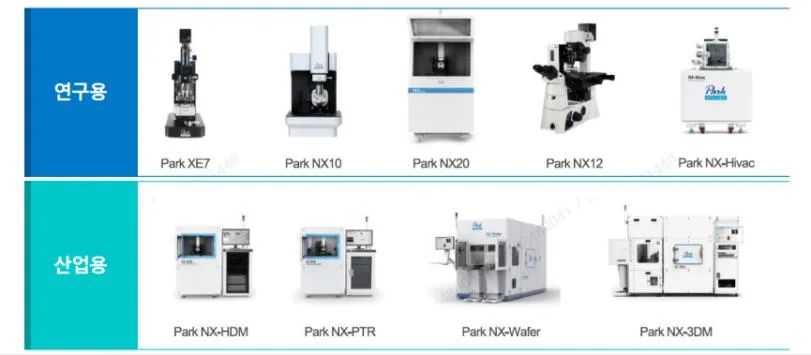
비접촉 모드 기술 상용화가 가능했던 것은 앞서 설명한 교차 간섭 제거 기술과 밀접한 연관이 있다. Non-contact Mode는 탐침이 시료 표면에 아주 근접한 상태를 지속적으로 유지해야 하므로, 탐침과 표본 사이의 미세한 거리 변화에 민감하게 반응할 수 있는 z축 정밀 제어가 필수적이다. 교차 간섭 제거 시스템은 x-y 스캐너와 z 스캐너의 독립적인 설계로 탐침의 안정적인 움직임이 가능하고정확한 위치 제어가 가능했고, 이로 인해 신속한 z 방향 반응 속도를 구현할 수있었다. 결과적으로, 안정적인 스캔 기능을 바탕으로 비접촉 모드를 탑재한 제
품 상용화가 가능해진 것이다.
파크시스템스의 이러한 기술적 혁신은 기존 경쟁사들과 차별화된 제품을 제공하는 데 중요한 역할을 했다. 당시에 상용화된 대부분의 원자현미경 제품이 탐침과 시료가 직접 접촉하는 방식을 채택하고 있었던 반면, 파크시스템스는 독자적인 기술을 바탕으로 탐침 마모와 시료 손상을 최소화할 수 있는 비접촉 모드를 구현했고, 기존 제품과 차별화되는 독창적인 제품으로서 경쟁 우위를 확보한것이다. 이러한 성과는 기술적 혁신을 통해 마이클 포터의 경쟁 전략 이론 중 ‘차별화(differentiation)’ 전략을 성공적으로 구현한 사례로 볼 수 있다. 기술의 신뢰도와 제품력을 바탕으로 파크시스템스는 작은 벤처기업에서 출발하여 2015년에는 글로벌 원자현미경 시장 점유율 2위를 달성하며 성공적으로 자리매김할수 있었다.
4.2 혁신의 확장: 시장 선점과 상업화
4.2.1 산업용 원자현미경 제품화
원자현미경 시장은 크게 연구용 장비 시장과 산업용 장비 시장으로 구분할 수있다. 연구용 장비 시장은 원자현미경 기술이 처음 개발되었을 때부터 성장해왔고, 가장 안정적이며 규모가 큰 시장이다. 학교나 연구기관 등이 주요 수요처로, 1회적 고객이 대다수인 만큼 제품력 못지 않게 브랜드 인지도, 판매망 등이중요하게 작용한다(파크시스템스 사업보고서, 2016). 산업용 장비 시장은 그에비해 늦게 시장 개발이 이루어지고 있는 분야이나, 첨단 제조 기술의 발전에 따라 미세 스케일의 구조물 계측에 대한 수요가 증가하며 함께 성장하고 있다.
파크시스템스는 2002년부터 2014년까지 연평균 성장률 11%라는 높은 수치를보인다. 해당 시기는 산업용 장비 시장이 활성화되지 않았을 때이므로 연구용장비가 시장의 대부분을 차지하는 상황에서 이뤄 낸 성장이었다는 해석이 가능하다. 그러나 연구용 장비 시장에서 지속적인 성장 폭 증가를 꾀하기는 어려운상황이었는데, 2010년대 원자현미경 시장은 브루커, 옥스포드, 히타치 하이테크등 글로벌 대기업들이 원자현미경 전문업체들을 경쟁적으로 인수하는 시기를거쳐 브루커가 압도적인 점유율 1위를 차지하고 있었다. 연구용 장비 시장에서글로벌 대기업의 마케팅 능력에 맞서 경쟁하는 것은 쉽지 않은 일이었고, 실제로 2015년 파크시스템스가 글로벌 시장 점유율 2위를 차지했지만 전체 시장에서 차지하는 비율은 10%가 채 안되는 수준이었다.
이러한 상황에서 산업용 장비 시장은 파크시스템스가 진출을 모색할 만한 신대륙과 같았다. 우선 파크시스템스의 핵심 기술은 산업계 진입 측면에서 유리한특성을 지니고 있었는데, 기존 원자현미경과 달리 시료 표면의 손상이 없는 비접촉 방식으로 정량적인 측정이 가능하다는 점이 반도체와 같이 공정 수율이중요한 미세 산업에서는 매우 강력한 장점이었다. 또한 대형 샘플을 측정할 수있는 구조적 이점을 가지고 있어 산업용 장비로서의 확장성 또한 높은 편이었다. 당시 산업용 원자현미경 시장의 경쟁 상황 또한 파크시스템스에게 유리하게작용했다. 원자현미경 기업 중 산업용 장비를 출시한 기업은 브루커(Bruker)가유일했으며, 산업용 원자현미경 장비의 잠재 고객 수가 다양한 연구 기관들에게영업해야 하는 연구용 장비 시장에 비해 상대적으로 제한적이었다. 또한 제품성능과 고객의 특수한 요구사항을 충족시키는 능력이 무엇보다 중요한 경쟁 요소였기 때문에, 파크시스템스 입장에서는 글로벌 대기업인 브루커와의 브랜드인지도 격차를 기술력으로 극복할 수 있는 기회가 열려 있는 시장이었다.
그림 14 파크시스템스 제품 라인업 (출처: 삼성증권)
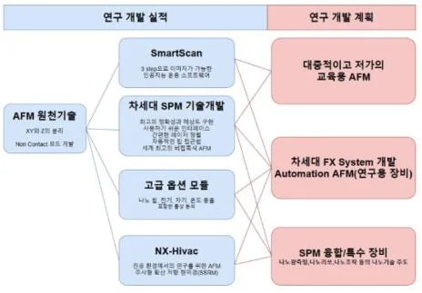
현재 파크시스템스는 연구용과 산업용 장비 시장에 대해 제품 라인업을 분리하고 있으며(그림 14), 각각에 대해 별도로 기술 로드맵을 구축하고 있다(그림
15). 두 로드맵은 동일한 AFM 원천기술을 기반으로 하여, 각각의 시장 특성에맞춘 차별화된 개발 계획으로 확장되어 나가는 모습을 보이고 있다. 연구용 시장의 로드맵에서는 더 대중적인 고객층을 겨냥하여 저가의 교육용 제품이나 사용 편의성 개선을 위한 제어 소프트웨어 개발 등이 포함되어 있고, 산업용 로드맵에서는 보다 명확한 어플리케이션인 반도체 시장을 타겟으로 하는 전략적 계획을 확인할 수 있다.
그림 15 파크시스템스 연구로드맵(왼쪽: 연구용 장비, 오른쪽: 산업용 장비)
(출처: 파크시스템스 사업보고서)
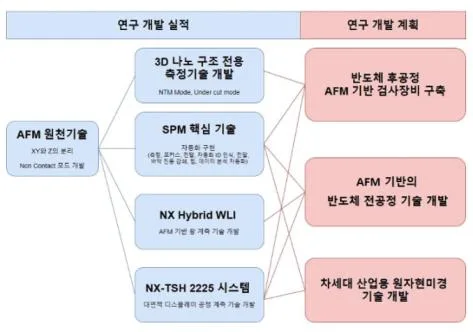
4.2.2 반도체 시장 선점 과정
파크시스템스가 다양한 산업 분야 중 반도체 시장을 타겟으로 삼은 이유는 제조 산업 전반적인 흐름과 관련이 깊다. 반도체의 집적화에 따라 제조 공정의 복잡성이 증가했고, 이에 따라 더욱 정밀한 측정과 검사의 필요성은 갈수록 커졌다. 반도체 생산에서 원자현미경의 수요 영역은 주로 계측검사 공정이었는데, 제조공정의 각 단계에서 제대로 진행되고 있는지 제품의 크기 및 구조를 정밀측정하여 품질을 검사하고, 결함을 검출하여 수율을 높이는 공정이다. 특히 7나노미터(nm) 이하 공정에서 EUV(Extreme Ultra Violet) 노광 기술이 필수화됨에 따라 고도의 계측검사에 대한 수요도 함께 증가했으며 고해상도 계측이 가능한원자현미경 도입 필요성이 대두되었다.
이와 같은 시장의 명확한 수요 외에도, 파크시스템스가 반도체 시장 진입을 결정하게 된 데에는 창업 초기부터 박상일 대표가 가졌던 선견지명과 준비된 실
행력이 중요한 역할을 했다. 현직자 인터뷰에 따르면, 박 대표는 연구자 출신으로서 기술의 정직성과 근본적인 혁신 가능성을 중시하는 철학을 기업 운영에반영해왔으며, 원자현미경 기술이 언젠가 반도체 산업과 같은 첨단 제조 분야에서 필수적인 도구로 자리 잡을 것이라는 믿음을 가지고 이를 꾸준히 준비해 왔다고 한다. 설립 당시 반도체 산업에서 원자현미경의 수요는 현재처럼 뚜렷하지않았지만, 박상일 대표는 원자현미경 기술이 가진 정밀성과 고해상도 계측 능력이 반도체 공정의 미세화 추세와 맞물리며 필연적으로 중요한 위치를 차지할것이라는 확신을 가지고 있었다. 이러한 비전은 단순히 기술 개발을 넘어, 시장변화의 흐름을 읽고 적기에 기술 상용화를 추진하는 전략적 실행으로 이어졌다.
그러나 반도체 시장에 진출하는 과정은 규모가 크지 않은 벤처기업에게 결코쉬운 도전이 아니었다. 반도체 생산 능력을 갖추고 있는 기업들은 대부분 대규모 기업들이었고, 산업 특성상 신규 장비 도입 시 추후 변경에 막대한 비용이소요되기 때문에 특히 신중한 자세를 취했다. 이러한 상황에서 2010년대 초반당시 상장도 되어 있지 않은, 한국의 작은 벤처기업이었던 파크시스템스는 시장진입에 어려움을 겪을 수밖에 없었다. 제품의 우수성을 입증할 기회를 얻는 것조차 어려운 상황에서, 파크시스템스는 기술력을 바탕으로 신뢰를 구축할 수 있는 방법으로서 연구 파트너십을 활용한다. 2015년 IMEC(Interuniversity Microelectronics Centre)과 JDP(Joint Development Project, 공동 개발 프로젝트) 협약을 진행하게 된 것이다. IMEC은 벨기에에 위치한 반도체 비영리 국제연구기관으로서, 세계 반도체 연구의 선두에 서 있는 중요한 기관이다. 해당 공동연구에서는 차세대 반도체 생산공정용 나노스케일 원자현미경 개발을 목적으로, 생산 수율 증대를 위한 프로토콜이나 표면 조도, 임계 치수 및 측벽 조도 등을 분석하는 계측 솔루션을 개발하였다. 이를 통해 파크시스템스는 실질적인 반도체공정에서의 요구 사항을 반영한 기술 개발을 진행할 수 있었고, 동시에 파크시스템스의 원자현미경이 반도체 제조 공정에서 실질적으로 활용될 수 있는지에대한 검증과도 같은 사건이었다. 프로젝트가 성공적으로 마무리됨에 따라 단순한 연구 개발을 넘어 파크시스템스의 기술력이 글로벌 반도체 산업에서 요구되는 수준을 충족함을 입증하는 계기가 되었으며, IMEC과의 협업 사실이 업계에알려지자 여러 메이저 반도체 제조 기업들에서 파크시스템스의 장비 도입 가능성을 타진하기 시작했다. 비접촉 모드 상용화로 웨이퍼 손상을 줄여 산업의 니즈(needs)를 훌륭하게 충족하고, IMEC과의 협업을 통해 신뢰도까지 얻게 되자업계 메이저 기업인 마이크론을 필두로 해외 여러 나라와 한국의 반도체 제조기업들에서 연쇄적인 발주가 이어졌다. 비슷한 시기에 기술특례 제도를 통해 상장사로 등록됨으로써 신뢰도를 높인 것도 유효했다. 결과적으로 앞서 반도체 산업에 진출했으나 주요 고객층을 확보하지 못한 경쟁사 브루커를 제치고, 파크시스템스는 반도체 산업용 원자현미경 시장을 실질적으로 선점하는 데 성공한 것이다. 2022년 기준 파크시스템스는 산업용 원자현미경 시장에서 60% 가량을 점유하고 있으며, 특히 글로벌 반도체 기업의 파크시스템스의 장비 사용 비율은 95%에 육박할 정도로 독점적인 위치에 있다(하이투자증권, 2023). 반도체용 원자현미경시장은 매년 30% 수준으로 성장하는 고성장 시장으로(삼성증권, 2021), 해당 시장에의 진출은 기업 실적에 상당한 영향을 끼쳤다. 2022년 파크시스템스매출 내역 분석 결과(그림 16) 전체 매출 중 66%가 산업용 시장에서 발생했음을 확인할 수 있다.
그림 16. 2022년, 2023년(추정) 파크시스템스 부문별 매출
(출처: 파크시스템스, 대신증권 Research&Strategy 본부)
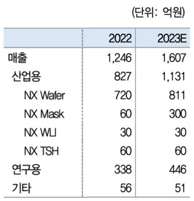
4.2.3 Beachhead Strategy
파크시스템스는 반도체 시장에 성공적으로 진입한 이후, 그 영역을 점차 확장해 나갔다. 초기에는 연구용 분석실을 중심으로 제품을 공급했으나, 2019년에서
2020년 사이에는 반도체 양산 라인으로도 진출하는 데 성공했다(삼성증권, 2021). 이러한 확장은 파크시스템스가 처음으로 출시한 반도체 산업용 인라인장비인 NX-Wafer 제품(그림 16)을 통해 본격화됐다.
그림 17 NX-Wafer 장비
(출처: 파크시스템스)
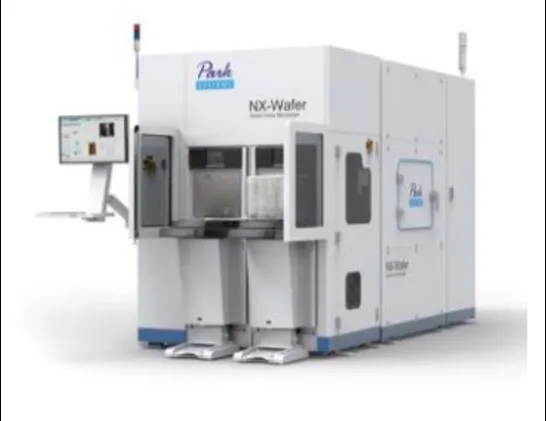
NX-Wafer는 주로 전공정 영역의 계측 공정에 사용되는 장비인데, 계측 공정이란 각 제조 공정 이후 공정 평가 및 피드백을 통해 반도체 수율 향상을 목표로하여 반도체 집적도의 향상에 따라 함께 그 중요성이 증가한다(그림 18). 특히해당 장비는 웨이퍼의 조도(roughness) 및 트렌치(trench, 웨이퍼 표면을 아래로파내 셀 집적도를 높이는 구조) 측정을 기본으로 하며 기존 광학 장비로는 검출이 불가능한 나노 크기의 결함을 자동으로 검출 분석할 수 있었다(파크시스템스 사업보고서). 또한 주 7일, 하루 24시간 가동되는 자동화 솔루션을 갖춘제품으로, 출시 이후 업계에서 매우 긍정적인 반응을 얻었다. 그 결과 2022년전체 매출의 절반 이상을 차지하며 수익의 주요 원천으로 자리잡는다.
그림 18 반도체 8대 공정과 계측검사 공정
(출처: 황국현, 2020)
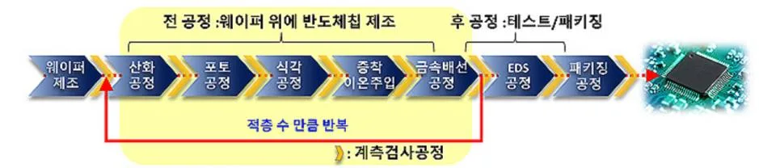
파크시스템스는 여기서 멈추지 않고 계측뿐만 아니라 다른 기능을 제공하는신규 장비를 통해 반도체 시장 내 영역을 확장했다. 대표적인 예인 NX-MASK 는 반도체 EUV 공정에 사용되는 웨이퍼 표면의 결함(defect)을 제거할 수 있는장비다. 해당 과정을 세정(Cleaning) 공정이라고 하며 전체 400~500개의 메인 공정 중 15% 정도를 차지하는 중요한 공정이다. 파크시스템스는 비접촉 방식의정밀 측정 기술을 응용하여 마스크 표면의 손상을 최소화하며 결함을 검출하고, 나노 탐침 제어를 통해 검출한 결함을 제거하는 미세 패턴 클리닝 기능을 구현했다(그림 19). 이 장비의 매우 높은 가격에 판매되지만, 값비싼 재료인 웨이퍼의 결함 제거 및 수명 연장을 통해 창출되는 경제적 가치가 매우 크다. 또한 파크시스템스는 EUV 장비를 공정에 도입한 대부분의 반도체 제조 기업에 이미제품을 납품하고 있기 때문에 판로 및 신뢰도 확보 측면에서 유리했고, 다수의 EUV 마스크 제조사와 반도체 제조사에 해당 장비를 납품할 수 있었다.
그림 19 AFM을 이용한 Defect Repair
(출처: SPIE, 현대차증권)
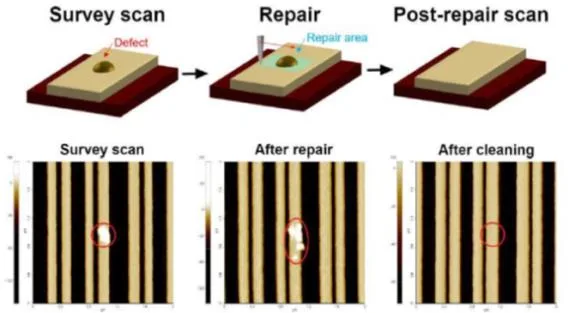
파크시스템스의 이러한 행보는 초기 시장 진입 후 동일한 시장 내 다른 세그먼트로의 확장을 목표로 하는 Beachhead Strategy의 성공적인 사례로 평가할 수있다. 파크시스템스는 초기 분석실 연구용 및 전공정 내 계측 공정 장비로서의성공을 기반으로, 반도체 제조 공정의 다양한 단계에서 활용할 수 있는 제품 라인업을 지속적으로 확대했다. 특히 전공정을 넘어 후공정 진출을 위해 원자현미
경과 백색광 간섭계(WLI, White Light Interferometry) 기술을 결합하는 하이브리드장비를 출시하며 반도체 시장 내 적용 범위를 넓히고 있다. 이러한 반도체 시장내 침투 확대와 제품 다각화는 기업 성장에도 긍정적인 영향을 미치고 있으며, 파크시스템스 내부자 인터뷰에 따르면 산업용 장비의 이익률이 연구용 장비보다 유의미하게 높은 것으로 확인된다. 그 결과 2015년까지 연구용 장비 매출이산업용 장비 매출을 상회하였으나, 2016년부터 역전되어 현재까지 현재까지 산업용 장비의 매출 비중이 지속적으로 증가하며, 전체 매출에서 차지하는 비율이점차 확대되고 있다(그림 20).
그림 20 파크시스템스 장비군별 매출액 추이
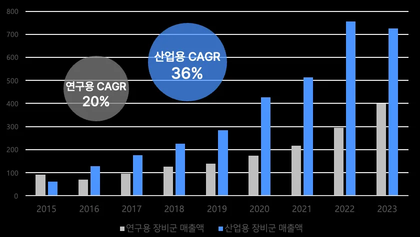
(단위: 억 원, 출처: 파크시스템스 사업보고서 재구성)
제 5 장 결론 및 시사점
5.1 요약
본 연구는 파크시스템스의 혁신 사례를 중심으로, 딥테크 벤처기업이 지속 가능한 경쟁 우위를 확보하고 글로벌 시장에서 성공적으로 성장할 수 있는 전략을 분석하였다.
첫째, 파크시스템스는 연구개발에 대한 적극적인 투자를 통해 기술 혁신을 이
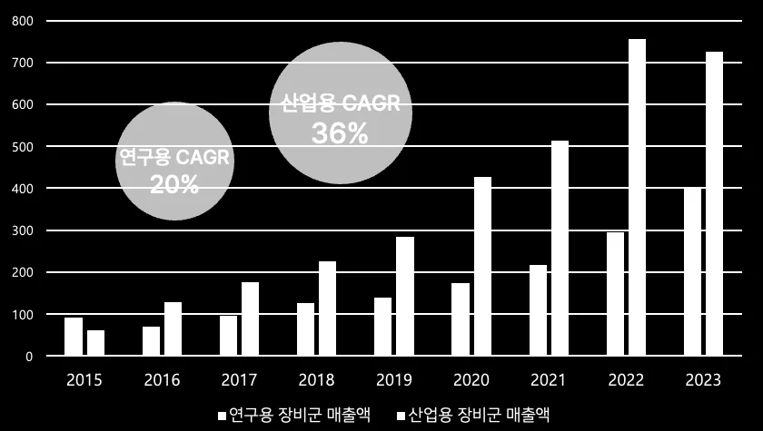
루었으며, 이를 바탕으로 제품 차별화(differentiation)를 실현하였다. 포터의 경쟁이론에 따르면, 차별화 전략은 독창적이고 우수한 제품을 통해 경쟁 우위를 확보하는 데 중요한 역할을 한다. 파크시스템스는 이러한 전략을 성공적으로 구현함으로써, 글로벌 원자현미경 시장에서 주요 플레이어로 자리잡을 수 있었다.
둘째, 보유 기술과 시장 상황을 면밀히 분석하여 산업용 장비 시장, 특히 반도체 분야로 전략적으로 확장하였다. 반도체 산업은 고정밀 계측과 비접촉 방식의분석이 필수적인 분야로, 파크시스템스의 차별화된 기술력은 이 시장에서 강력한 경쟁 우위를 제공하였다. 반도체 시장 진출 이후에는 Beachhead Strategy를 활용하여, 동일한 시장 내의 다른 세그먼트로 성공적으로 확장해 나갔다. 초기 시장에서의 입지를 기반으로, 파크시스템스는 전공정을 넘어 후공정으로의 진출까지 이어가며, 반도체 시장 내 포트폴리오를 다각화하였다. 이러한 전략은 단기적인 성과를 넘어 지속 가능한 성장을 가능케 하는 중요한 요인으로 평가할 수있다.
5.2 시사점
본 연구는 파크시스템스의 사례를 통해 딥테크 벤처기업이 지속 가능한 성장을 이루기 위해 필요한 전략적 시사점을 제공한다. 딥테크 벤처기업이 시장 내경쟁 우위를 확보하기 위해서는 무엇보다도 지속적인 R&D 투자와 전략적 시장선정이 필수적이다. 또한 다른 어떤 산업군보다 기술력이 핵심 경쟁력으로 작용하며, 경쟁사와 차별화되는 포인트를 명확하게 구축하는 것이 중요하다. 기술적역량을 확보한 후에는, 해당 기술이 가장 큰 가치를 발휘할 수 있는 적합한 시장을 식별하는 것이 핵심이다. 특히 파크시스템스가 보유한 원자현미경 기술의경우, 미세화 공정이 필수적인 산업을 타겟으로 삼아 그 강점을 극대화할 수 있었다.
또한 거점 시장(Beachhead Market)에서의 성공을 바탕으로 인접 세그먼트로 확장하는 전략이 딥테크 기업의 지속적인 성장에 유효할 수 있음을 보여준다. 파크시스템스가 초기 시장 진입에서 IMEC과의 협력을 중요한 계기로 활용했듯이, 기초과학이나 공학 기술을 기반으로 하는 공동 연구 프로젝트를 활용하여 접근하는 것도 좋은 방법이 될 수 있다. 이를 통해 시장 진입 전 업계 수요를 미리파악하고 제품 개선의 기회로서 활용하여 초기 진입 시의 부담을 줄일 수 있다.
특히 딥테크 분야에서는 기술 신뢰도가 매우 중요한 시장이 많아, 초기 시장에서의 성공이 향후 인접 세그먼트 진출 시 강력한 레퍼런스로 작용할 수 있다.
복잡한 제조 공정을 필요로 하는 시장일 경우 핵심 기술을 기반삼아 다양한솔루션으로 응용해 나가는 능력이 지속적인 성장의 동력이 될 수 있다. 본 사례에서 파크시스템스는 원자현미경 기술을 기반으로 반도체 제작 전공정에서 후공정으로 확장해 나가고 있으며, 이러한 기술적 유연성은 시장 변화에 대응하는데 중요한 요소로서 작용한다.
본 연구에서 도출된 시사점은 유사한 도전 과제에 직면한 다른 딥테크 벤처기업들에게 유용한 전략적 가이드라인을 제공할 것으로 기대된다. 특히 기술력 기반의 차별화 전략과 거점 시장을 통한 초기 입지 확보, 그리고 이를 바탕으로한 인접 시장 확장은 상대적으로 자원이 제한된 딥테크 벤처 기업들에게 실질적인 성공 방안을 제시할 수 있다.
5.3 연구의 한계와 후속 연구 제안
본 연구는 단일 사례 연구라는 점에서 일반화의 한계가 있다는 점을 명확히할 수 있다. 본 연구에서는 파크시스템스라는 특정 기업의 내재적 기술력과 타겟 시장 진입 과정에 대해 주로 다뤘으나, 원자현미경 산업 내 경쟁 기업들이동일 시기 어떠한 전략을 채택했는지에 대해 추가적인 분석이 이루어질 필요가있다. 예를 들어, 업계 글로벌 대기업이었던 브루커가 반도체 시장 진출을 앞서시도했음에도 파크시스템스에 비해 상대적으로 성과를 내지 못한 이유를 탐구함으로써, 기술력 외에 다른 성공 요인을 도출할 수 있을 것이다. 또한 딥테크기업이 보유한 원천 기술의 종류에 따라 진입 대상 산업이나 응용 분야에 차이가 있을 수 있으므로, 다른 산업에 동일 전략을 적용할 경우 추가적인 검토가필요할 수 있다.
현재 반도체 시장은 인공지능 기술의 발전과 함께 새로운 국면을 맞이하고 있다. 이와 같은 시장 환경 변화에 대응하여 파크시스템스가 앞으로 어떤 전략적선택을 할지에 대한 추적 연구도 유의미할 것이다. 특히, 신기술 도입에 따른반도체 공정의 변화 과정 또는 새로운 응용 분야로 확장해 나가는 과정에서 미래의 불확실성에 대처하는 딥테크 기업의 사례를 분석할 수 있을 것이다.
Reference
[1] Porter, M. E., Competitive Strategy: Techniques for Analyzing Industries and Competitors, New York: Free Press, 1980. [2] Moore, G. A., Crossing the Chasm: Marketing and Selling High-Tech Goods to Mainstream Customers, New York: Harper Business, 1991. [3] Vittorio Chiesa, Federico Frattini, "Commercializing Technological Innovation: Learning from Failures in High-Tech Markets", Journal of Product Innovation Management , vol. 28, issue. 4, pp. 437-454, July. 2011.
[4] The Global Market for Scanning Probe Microscopes to 2025, FUTURE MARKETS, 2018.
[5] Global Atomic Force Microscopy (AFM) Market Report, QYRESEARCH, 2024.
[6] 홍재완, 권준형, 박상일, 주사 탐침 현미경, 특허등록번호 10- 0646441, 2006년 11월 8일.
[7] 권준형, 홍재완, 김용석, 이동연, 이규민, 이상민, 박상일, Atomic Force Microscope with Improved Scan Accuracy, Scan Speed, and Optical Vision, Review of Scientific Instruments, 2003. [8] 사업보고서 및 감사보고서, 파크시스템스, 2004~2024.
[9] 10-k Report, Bruker, 2008~2023.
[10] 배현기, 파크시스템스, 미세화가 될수록 타겟시장이 커진다, 삼성증권, 2021.
[11] 조상준, 한국 연구장비산업의 현실과 중요성 및 원자현미경 성공사례 소개, 2021.
[12] 박보경, 이윤빈, 2019년 우리나라 민간기업의 연구개발활동 현황, 한국과학기술기획평가원, 2020.
[13] 양경득, 나노 세계의 열쇠: 원자현미경, 대한화학회 화학교육지, 2009년 봄호.
[14] 황국현, 반도체 패턴 웨이퍼 전면적 계측검사를 위한 분광 타원계측기술의 패러다임 변화, 기계로봇연구정보센터, 2020.
[15] 신동형, 이재성, 새로운 혁신 성장 방안 딥테크, 비즈니스 모델 혁신에서 기술 혁신으로, 한국지능정보사회진흥원, 2023.
[16] 박상욱, 높은 확장성이 매력적인 기업, 하이투자증권, 2023.
[17] 박광태, 파크시스템스, 한국IR협의회, 2020.
[18] Gunjan Solanki, What is a BEACHHEAD strategy in Marketing? Normandy of Marketing, Marketing Weekly, 2022. (https://www.mar ketingweekly.in/post/what-is-a-beachhead-strategy-in-marketing) [19] '외길인생 30년' 파크시스템스, 반도체 원자현미경 시대 연다, 디지털데일리, 2022.
[20] 조장우, 반도체업계 '슈퍼을' 한국에도 있다, 원자현미경 세계2위파크시스템스, 비즈니스포스트, 2022. (https://www.businesspost.co.kr/B P?command=article_view&num=299139)
[21] 조충희, 박상일 원자현미경 한 우물, 파크시스템스 EUV시대 수퍼을 되나, 비즈니스포스트, 2023. (https://www.businesspost.co.kr/BP?co mmand=article_view&num=315425)
[22] 전략제품 현황분석 반도체 후공정/PCB 노광장비, 스마트 테크브릿지, 기술보증기금 [23] 김정호, 딥테크 스타트업의 현황과 지원정책 연구, 산업연구원, 2023.